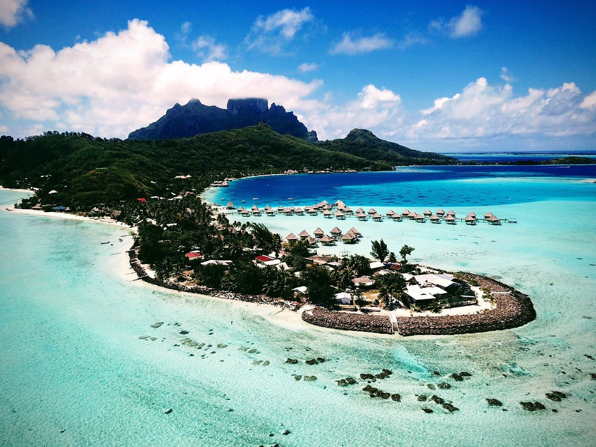
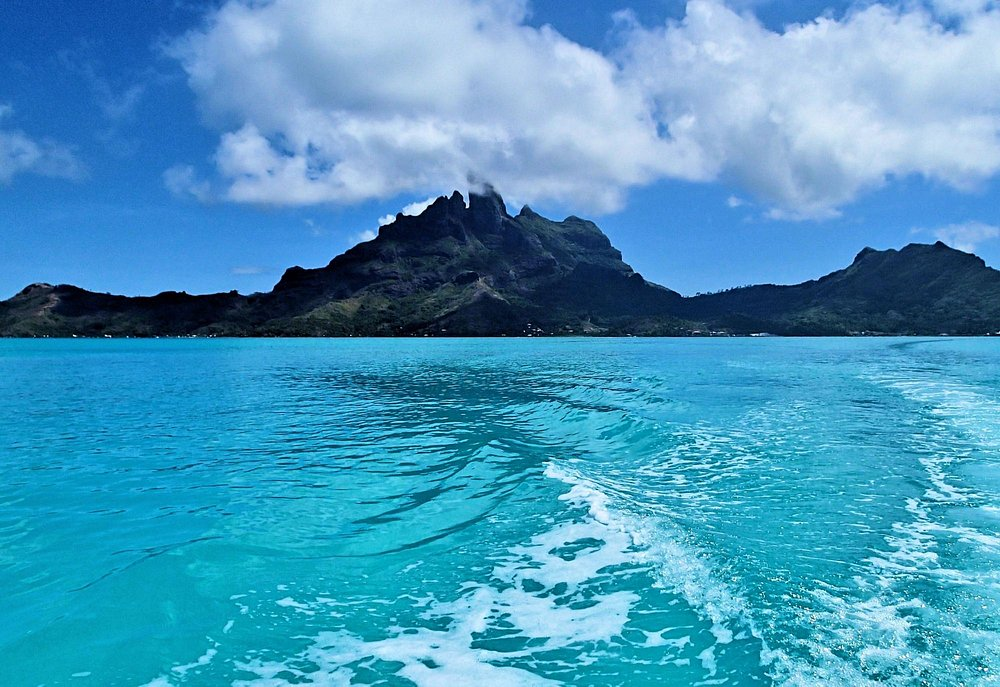
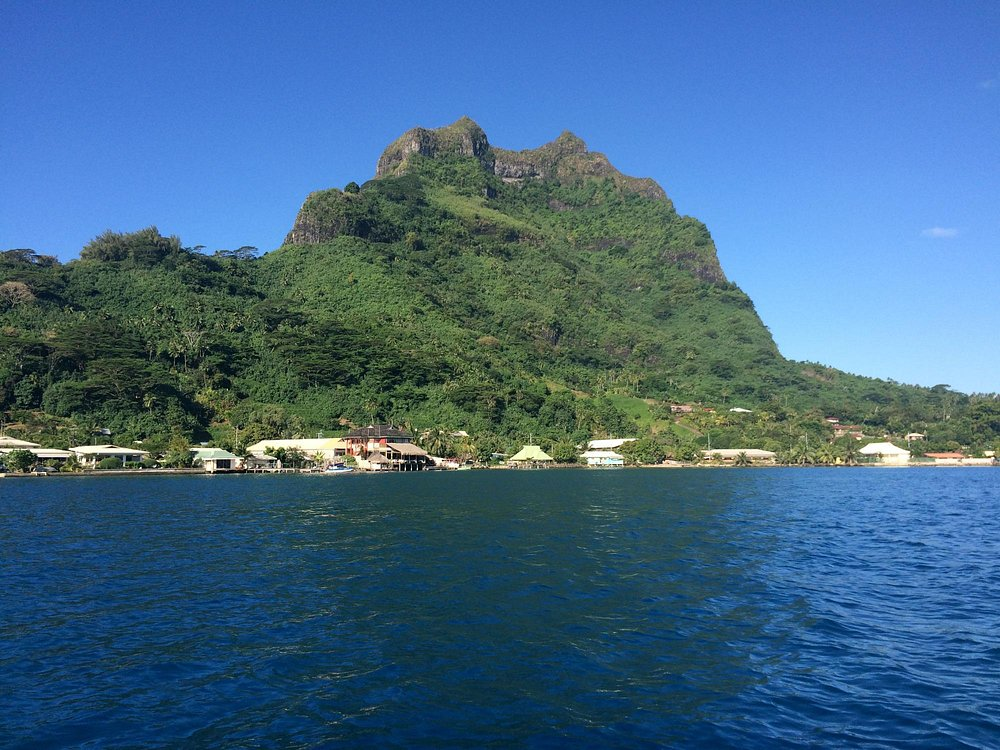

Bora Bora
Bora Bora is a small South Pacific island northwest of Tahiti in French Polynesia. Surrounded by sand-fringed motus and a turquoise lagoon protected by a coral reef, it’s known for its scuba diving. It's also a popular luxury resort destination where some guest bungalows are perched over the water on stilts.Bora Bora is world-famous for its iconic volcanic views, incredible turquoise lagoon, pristine white sandy beaches, and luxurious overwater resorts on islets that provide beautiful views of the beautiful surroundings. This island paradise is on the bucket list of many who wish to visit during their lifetime.
THINGS TO-DO
- Jet Ski Tour
- Get out on the water at Bora Bora om this combo Jet Ski and snorkeling tour that includes a shark and stingray boat safari. Select a single or double Jet Ski and zip around the Polynesian paradise with an experienced guide. After lunch at Bloody Mary’s, hop in a powerboat to a shallow lagoon for a close encounter with black-tip reef sharks and stingrays.

- Tour of Bora Bora by land and sea
- Immerse yourself in the natural beauty of Bora Bora's lagoon with a small-group snorkeling tour to the island’s best spots. Get up close to blacktip reef sharks, stingrays and tropical fish underwater. Then feast on a Polynesian-style barbecue picnic while enjoying local hospitality and relaxing on the white-sand beach of a small island. Numbers are limited to 12 passengers for a more personalized experience with your professional guide.

- Full Day Lagoon Group Tour in Bora Bora with lunch
- Day trip on the lagoon in Bora Bora, soaking up the sights and experiences. Don a snorkeling mask and fins and start your exploration in the shallow waters, looking at the colorful tropical fish, coral, and stingrays. Graduate to the open ocean and keep an eye out for different types of shark. Refresh after this adventure with a buffet lunch of local dishes will be served on the beach.

- 4WD Tour Including Lunch at Bloody Mary's and Jet Ski Tour
- Combine views of Bora Bora by land and sea during this full-day tour. Circle the island in a rugged 4x4 vehicle, then refuel with a lunch pit stop at the popular Bloody Mary's. End up with a Jet Ski ride around the azure waters (select single or double). Round-trip transportation from the cruise port and select hotels included.

PLACES TO GO AND SEE
- Matira Beach
- Paddle board along the coast of crystal clear water of the South Pacific.

- Mount Otemanu
- An ancient volcano that rises up to a sharp point at 2,385 feet from the surface.

- Mount Pahia
- the third highest summit of Bora Bora and the second tallest climbeable.

- Tupitipiti Point
- Dive site is known for a steep drop-off, its purple coral and colorful sponges and the variety of larger fish attracted to this area including sharks, rays, groupers and large parrotfish.